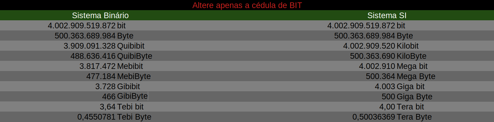

Índice
Índice103.5 Criar, monitorar e eliminar processosPSPSTREEPGREPTOPKILL, KILLALL, PKILLKILLKILLALLPKILL UPTIMEFREESCREENTMUXWATCHJOBS, BG, FG e NOHUPNOHUP
103.5 Criar, monitorar e eliminar processos
Executar o gerenciamento básico de processos.
Os processos trabalham com diferentes tipos de IDs, sendo eles:
| Nomeclatura | Descrição |
|---|---|
| PID | Process ID (ID do processo) |
| PPID | Parent Process ID (ID do processo pai do nosso processo) |
| UID | User Identifield (ID do usuário) |
| GID | Group Identifield (ID do grupo) |
| EUID | Effective User ID |
| EGID | Effective Group IP |
Quando um arquivo, um processo, dentre outras coisas são criadas no linux, elas são atribuidas a um usuário dono e um grupo dono, normalmente euid e egid são iguais a uid e gid. Mas quando usamos comando como sudo que invoca as permissões de outro usuário (executa com o outro usuário), ou quando possuem bits especiais setados, euid e egid são criados com o uid e gid do usuário que realmente efetuou a ação.
Exemplo:
x# Crie um arquivo e veja quem é o usuario e dono dele:linux:/tmp$ touch arquivo1linux:/tmp$ stat arquivo1 | grep idAcesso: (0664/-rw-rw-r--) Uid: ( 1001/ linux) Gid: ( 1001/ linux)## Perceba que o usuário efeteivo era o linux (usuário linux) # Agora crie um novo arquivo usando o sudo:linux:/tmp$ sudo touch arquivo2linux:/tmp$ stat arquivo2 | grep idAcesso: (0644/-rw-r--r--) Uid: ( 0/ root) Gid: ( 0/ root)# Perceba que agora foi atribuido o ID 0 (id do root), porque quem criou# o arquivo foi o root e não meu usuário linux.# Essa é a diferença entre UID, GID e EUID e EGID.
PS
O comando ps exibe os processos ativos no momento de sua execução. Se executado sem argumentos, vai exibir os processos apenas do usuário atual.
Opções:
xxxxxxxxxx-u - Todos os processos por usuário;-x - Todos os processos que não tenham um tty atrelado;-a - Todos os processos de todos os usuários;-f - Mostra os processos em forma de árvore (exibe parentesco);-l - Mostra em forma de lista -C <string> - Busca por tudo da string.-A - Seleciona todos os processos de todos os usuários.-U <user> - Pesquisa por usuário.-o <formato> - Seleciona um formato para stdout.state = Estado do processo;tty = tty do processo;user = Usuário do processo;command = Comando usado para criar o processo;comm = Nome do processo;fname = 8 bytes do nome do processo (não pega o nome todo);rss = Memória usada pelo processo;ni = É o valor de espaço do usuário, podemos usar para controlar o valor da prioridade de um processo;pri = É a prioridade real do processo que é usada pelo kernel do Linux para agendar uma tarefa. Maior número significa menor prioridade;state = Estado do processo em formato Linux moderno.s = Estado do processo em formato Linux moderno.stat = Estado do processo em formato BSD.wchan = Endereço da função do kernel em que o processo está em suspensão (use wchan se desejar o nome da função do kernel). As tarefas em execução exibirão um traço ('-') nesta coluna.Informações fornecidas pelo PS
xxxxxxxxxxUSER - Nome de usuário efetivo.PID - O número que representa o ID do processo.%CPU - Utilização da CPU pelo processo no formato "##.#".Atualmente, é o tempo de CPU usado dividido pelo tempo em que oprocesso está em execução (proporção cputime / realtime), expressoem porcentagem.%MEM - Proporção do tamanho do conjunto residente do processo para amemória física na máquina, expressa como uma porcentagem.VSZ - Tamanho da memória virtual do processo em KiB (unidades de1024 bytes) que o processo está consumindo.RSS - Tamanho do conjunto residente, a memória física não trocadaque uma tarefa usou (em kilobytes).TTY - São consoles virtuais. Eles são terminais virtuais (emuladoresde terminal) implementados pelo kernel e independentes do ambientegráfico.START - Hora em que o comando foi iniciado.Se o processo foi iniciado há menos de 24 horas, o formato de saídaé "HH:MM:SS"; caso contrário, é "Mmm dd" (onde Mmm é um nome de mêscom três letras).TIME - Tempo acumulado da CPU, formato "[DD-] HH:MM:SS".(também conhec ido por cputime).COMMAND - Comando usado para criar o processo.
Exemplos:
xxxxxxxxxx# Exibindo os processos do usuário atual:linux:~$ ps PID TTY TIME CMD 21362 pts/0 00:00:00 bash 21556 pts/0 00:00:00 ps # Exibindo todos os processos de todos os usuários:linux:~$ ps -a PID TTY TIME CMD 21361 pts/0 00:00:00 su 21362 pts/0 00:00:00 bash 21548 pts/1 00:00:00 sudo 21549 pts/1 00:00:00 vim 21585 pts/0 00:00:00 ps ## Exibindo os processos que não tem uma tty atrelado.# Para isso vamos ter que exibir outros usuário também:linux:~$ ps -uxaroot 19146 0.0 0.0 0 0 ? I 13:40 0:00 [kworker/0:3-events]root 19229 0.0 0.0 0 0 ? I 13:41 0:00 [kworker/3:1-events]root 19278 0.6 0.0 0 0 ? I 13:45 0:13 [kworker/2:1-events]root 20894 0.1 0.0 0 0 ? I 14:01 0:01 [kworker/u8:3-i915]# Suprimi a saída...# Mostrando em modo de árvore:linux:~$ ps -uafUSER PID %CPU %MEM VSZ RSS TTY STAT START TIME COMMANDlinux 21377 0.0 0.0 11048 5332 pts/1 Ss 14:12 0:00 bashroot 21548 0.0 0.0 14048 5284 pts/1 S+ 14:14 0:00 \_ sudo vim /usr/bin/ps1root 21549 0.0 0.1 25104 10236 pts/1 S+ 14:14 0:00 \_ vim /usr/bin/ps1linux 8028 0.0 0.0 11176 5404 pts/0 Ss 11:02 0:00 bashroot 21361 0.0 0.0 13708 4948 pts/0 S 14:11 0:00 \_ su linuxlinux 21362 0.0 0.0 9996 4184 pts/0 S 14:11 0:00 \_ bashlinux 21652 0.0 0.0 11912 3736 pts/0 R+ 14:21 0:00 \_ ps -uaf# Em modo de lista:linux:~$ ps -laF S UID PID PPID C PRI NI ADDR SZ WCHAN TTY TIME CMD4 S 0 21361 8028 0 80 0 - 3427 - pts/0 00:00:00 su4 S 1001 21362 21361 0 80 0 - 2499 do_wai pts/0 00:00:00 bash4 S 0 21548 21377 0 80 0 - 3512 - pts/1 00:00:00 sudo4 S 0 21549 21548 0 80 0 - 6276 - pts/1 00:00:00 vim0 R 1001 21672 21362 0 80 0 - 2873 - pts/0 00:00:00 ps# Pesquisando os PIDs de um processo:linux:~$ ps -C chrome PID TTY TIME CMD 17419 ? 00:01:02 chrome 17430 ? 00:00:00 chrome 17431 ? 00:00:00 chrome 17436 ? 00:00:00 chrome 17454 ? 00:21:10 chrome 17460 ? 00:00:06 chrome 17495 ? 00:00:04 chrome 17795 ? 00:00:09 chrome 18084 ? 00:00:03 chrome 18337 ? 00:00:00 chrome 18365 ? 00:00:03 chrome 18603 ? 00:28:37 chrome 18623 ? 00:05:15 chrome 18636 ? 00:30:35 chrome 18661 ? 00:00:00 chrome# Ótimo comando, cria uma saída personalizada:ps -U USUARIO -o user,tt,state,pid,ppid,command,comm,rss,ni,pri,lstart# Mesma coisa acima, mas para todos os usuários:ps -Ao user,tt,state,pid,ppid,command,comm,rss,ni,pri,lstart
Observação:
xxxxxxxxxxQuando você notar que o campo PRI (PRIORITY) possui um traço (-),significa que o processo está rodando em tempo real.O valor do PRI é estranho e não segue as normas de atribuição do valor,o PRI do comando TOP, parece ser mais correto e segue as normas de atribuição.Isso porque no PS o campo PRI possui o valor 19 (que é igual a 119), o que não faz sentido porque tendo NI como 0, a PRI deveria ser 120, assim como é no comando TOP.
Entendendo as flags de State, Stat e S:
xxxxxxxxxxAqui estão os diferentes valores que os especificadores de saída s, stat e stateexibirão para descrever o estado de um processo:D = sono ininterrupto (geralmente IO)I = thread ocioso do kernelR = em execução ou executável (na fila de execução)S = suspensão interrompível (aguardando a conclusão de um evento)T = parado pelo sinal de controle do trabalhot = parado pelo depurador durante o rastreamentoW = paginação (não é válida desde o kernel 2.6.xx)X = morto (nunca deve ser visto)Z = processo extinto ("zumbi"), finalizado mas não colhido pelo paiPara formatos BSD e quando a palavra-chave stat é usada, caracteres adicionais podem ser exibidos:<= alta prioridade (não é agradável para outros usuários)N = baixa prioridade (agradável para outros usuários)L = tem páginas bloqueadas na memória (para E / S personalizadas e em tempo real)s = é um líder de sessãol = é multiencadeado (usando CLONE_THREAD, como fazem os pthreads NPTL)+ = está no grupo de processos em primeiro plano
PSTREE
Exibe uma árvore dos processos.
Opções
xxxxxxxxxx-p = Mostra o PID.
Exemplos:
xxxxxxxxxx# Mostrando sem argumentos:linux:~$ pstreesystemd─┬─ModemManager───2*[{ModemManager}] ├─NetworkManager───2*[{NetworkManager}] ├─accounts-daemon───2*[{accounts-daemon}] ├─acpid ├─3*[agetty] ├─avahi-daemon───avahi-daemon ├─blueberry-tray─┬─python3───rfkill │ └─4*[{blueberry-tray}] ├─bluetoothd ├─colord───2*[{colord}] ├─cron ├─csd-printer───2*[{csd-printer}] ├─cups-browsed───2*[{cups-browsed}] ├─cupsd ├─dbus-daemon ├─firefox─┬─Privileged Cont───25*[{Privileged Cont}] │ ├─RDD Process───3*[{RDD Process}] │ ├─Web Content───36*[{Web Content}] │ ├─Web Content───29*[{Web Content}] │ ├─Web Content───25*[{Web Content}] │ ├─Web Content───19*[{Web Content}] │ ├─WebExtensions───23*[{WebExtensions}] │ └─81*[{firefox}]# Exibindo o PID:linux:~$ pstree -psystemd(1)─┬─ModemManager(1030)─┬─{ModemManager}(1053) │ └─{ModemManager}(1055) ├─NetworkManager(820)─┬─{NetworkManager}(995) │ └─{NetworkManager}(1000) ├─accounts-daemon(808)─┬─{accounts-daemon}(892) │ └─{accounts-daemon}(998) ├─acpid(813) ├─agetty(1056) ├─agetty(18531) ├─agetty(18545) ├─avahi-daemon(815)───avahi-daemon(875) ├─blueberry-tray(1749)─┬─python3(1769)───rfkill(1772) │ ├─{blueberry-tray}(1764) │ ├─{blueberry-tray}(1765) │ ├─{blueberry-tray}(1767) │ └─{blueberry-tray}(1768) ├─bluetoothd(904) ├─colord(1591)─┬─{colord}(1592) │ └─{colord}(1594) ├─cron(817) ├─csd-printer(1597)─┬─{csd-printer}(1598) │ └─{csd-printer}(1599) ├─cups-browsed(999)─┬─{cups-browsed}(1036) │ └─{cups-browsed}(1037) ├─cupsd(818) ├─dbus-daemon(819) ├─firefox(2066)─┬─Privileged Cont(2241)─┬─{Privileged Cont}(2244) │ │ ├─{Privileged Cont}(2247) │ │ ├─{Privileged Cont}(2248) │ │ ├─{Privileged Cont}(2252) │ │ ├─{Privileged Cont}(2254) │ │ ├─{Privileged Cont}(2255) │ │ ├─{Privileged Cont}(2256) │ │ ├─{Privileged Cont}(2257) │ │ ├─{Privileged Cont}(2258) │ │ ├─{Privileged Cont}(2259) │ │ ├─{Privileged Cont}(2262) │ │ ├─{Privileged Cont}(2263) │ │ ├─{Privileged Cont}(2264) │ │ ├─{Privileged Cont}(2269) │ │ ├─{Privileged Cont}(2270) │ │ ├─{Privileged Cont}(2285) │ │ ├─{Privileged Cont}(2287) │ │ ├─{Privileged Cont}(2295) │ │ ├─{Privileged Cont}(2297) │ │ ├─{Privileged Cont}(2299) │ │ ├─{Privileged Cont}(2309) │ │ ├─{Privileged Cont}(2310) │ │ ├─{Privileged Cont}(2311) │ │ ├─{Privileged Cont}(2327) │ │ └─{Privileged Cont}(23960)
PGREP
Exibe apenas o PPID do nome do processo.
Opções:
xxxxxxxxxx-u <usuário> = Filtra por usuário.
Exemplos:
xxxxxxxxxx# Exibindo o PPID do firefox:linux:~$ pgrep firefox2066# Exibindo o PPID do bash:linux:~$ pgrep bash8028213622326123280# Exibindo o PPID do bash mas para o usuário linux:linux:~$ pgrep -u linux bash21362
TOP
Exibe os processos em tempo real.
Opções:
x-- Opções da linha de comando-u = Faz buscas por um usuário-b = Joga a informação na tela (Fica atualizando).-d <N> = Número de segundos entre atualizações.-n <N> = Número de interações até encerrar.-- Opções do dashboard do TOPk = Mata um processo.u = Filtra por usuário.L = Filtra por string.
Para entender sobre Load Average, acesse o link O que é Load Average?
Exemplos:
x
# Jogando a informação na tela, atualizando a cada 2 segundos e com apenas 2 interações,# Apenas para o usuário linux:linux:~$ top -b -d 2 -n 2 -u linuxtop - 16:24:19 up 6:37, 1 user, load average: 0,98, 0,83, 0,85Tarefas: 266 total, 1 em exec., 264 dormindo, 0 parado, 1 zumbi%CPU(s): 8,8 us, 4,4 sis, 0,0 ni, 85,3 oc, 0,0 ag, 0,0 ih, 1,5 is 0,0 trMB mem : 7873,5 total, 486,4 livre, 3106,8 usados, 4280,3 buff/cacheMB swap: 2048,0 total, 2029,0 livre, 19,0 usados, 4096,0 mem dispon. PID USUARIO PR NI VIRT RES SHR S %CPU %MEM TEMPO+ COMANDO 25512 linux 20 0 12092 3796 3188 R 6,2 0,0 0:00.02 top 21362 linux 20 0 10128 4312 3560 S 0,0 0,1 0:00.27 bash 25461 linux 20 0 9996 4164 3572 S 0,0 0,1 0:00.00 bashtop - 16:24:21 up 6:37, 1 user, load average: 0,99, 0,83, 0,85Tarefas: 266 total, 1 em exec., 264 dormindo, 0 parado, 1 zumbi%CPU(s): 10,1 us, 5,1 sis, 0,0 ni, 84,3 oc, 0,1 ag, 0,0 ih, 0,4 is 0,0 trMB mem : 7873,5 total, 486,4 livre, 3106,8 usados, 4280,3 buff/cacheMB swap: 2048,0 total, 2029,0 livre, 19,0 usados, 4096,0 mem dispon. PID USUARIO PR NI VIRT RES SHR S %CPU %MEM TEMPO+ COMANDO 25512 linux 20 0 12092 3796 3188 R 0,5 0,0 0:00.03 top 21362 linux 20 0 10128 4312 3560 S 0,0 0,1 0:00.27 bash 25461 linux 20 0 9996 4164 3572 S 0,0 0,1 0:00.00 bash
KILL, KILLALL, PKILL
Comandos usados para enviar sinais à processos, cada comando enviar um sinal de um modo diferente do outro.
Sinais são usados para enviar informações a um processo, cada sinal informa uma ação diferente ao processo, a tabela abaixo demonstra alguns sinais e seus significados:
| Nome do Sinal | Número do Sinal | Descrição |
|---|---|---|
| SIGHUP | 1 | Envia sinal para reler arquivos de configuração, dependendo do processo, pode encerrar; |
| SIGINT | 2 | Interrompe a execução do processo (é ativado ao pressionar Ctrl+c); |
| SIGQUIT | 3 | Finaliza o processo (Idem Ctrl+\); |
| SIGABRT | 6 | Aborta o processo; |
| SIGKILL | 9 | Finaliza de forma abrupita o processo (mata o processo), esse sinal não pode ser bloqueado ou ignorado, sempre será executado; |
| SIGTERM | 15 | Sinal correto enviado para finalização normal de um processo; |
| SIGSTOP | 19 | Pausa a execução do processo (não pode ser ignorado ou bloqueado); |
| SIGTSTP | 20 | Pausa a execução do processo (o processo pode ignorar ou rejeitar esse sinal); |
| SIGCONT | 18 | Volta a executar um processo parado; |
KILL
Envia um sinal de finalização, para que o processo se encerre (Sinal padrão é 15 - SIGTERM).
Opções:
xxxxxxxxxx-l = Lista todos os sinais do kill;
Exemplos:
xxxxxxxxxx# Criei vários processos no tmux (vários terminais):linux:~$ ps -uUSER PID %CPU %MEM VSZ RSS TTY STAT START TIME COMMANDlinux 25720 0.0 0.0 9748 3628 pts/1 S+ 16:39 0:00 tmuxlinux 25723 0.0 0.0 10800 4912 pts/2 Ss+ 16:39 0:00 -bashlinux 25730 0.0 0.0 10800 5000 pts/3 Ss+ 16:39 0:00 -bashlinux 25737 0.0 0.0 10800 4900 pts/4 Ss+ 16:39 0:00 -bashlinux 25746 0.0 0.0 10800 4932 pts/5 Ss+ 16:39 0:00 -bashlinux 25867 0.2 0.0 10800 4900 pts/6 Ss+ 16:44 0:00 -bash# Vou matar uma sessão em específica do Tmux (Usando processo de kill padrão):linux:~$ kill -15 25746# Listando de novo:linux:~$ ps -uUSER PID %CPU %MEM VSZ RSS TTY STAT START TIME COMMANDlinux 25720 0.0 0.0 9748 3628 pts/1 S+ 16:39 0:00 tmuxlinux 25723 0.0 0.0 10800 4912 pts/2 Ss+ 16:39 0:00 -bashlinux 25730 0.0 0.0 10800 5000 pts/3 Ss+ 16:39 0:00 -bashlinux 25737 0.0 0.0 10800 4900 pts/4 Ss+ 16:39 0:00 -bashlinux 25867 0.0 0.0 10800 4900 pts/6 Ss+ 16:44 0:00 -bash# Matando mais de 1 processo por vez (enviando o sinal de morte imediata):linux:~$ kill -9 25867 25737# Matando o PPID (Processo pai do Tmux client):linux:~$ kill -15 25720Listando todos os sinais disponíveis:
x
linux:~$ kill -l 1) SIGHUP 2) SIGINT 3) SIGQUIT 4) SIGILL 5) SIGTRAP 6) SIGABRT 7) SIGBUS 8) SIGFPE 9) SIGKILL 10) SIGUSR111) SIGSEGV 12) SIGUSR2 13) SIGPIPE 14) SIGALRM 15) SIGTERM16) SIGSTKFLT 17) SIGCHLD 18) SIGCONT 19) SIGSTOP 20) SIGTSTP21) SIGTTIN 22) SIGTTOU 23) SIGURG 24) SIGXCPU 25) SIGXFSZ26) SIGVTALRM 27) SIGPROF 28) SIGWINCH 29) SIGIO 30) SIGPWR31) SIGSYS 34) SIGRTMIN 35) SIGRTMIN+1 36) SIGRTMIN+2 37) SIGRTMIN+338) SIGRTMIN+4 39) SIGRTMIN+5 40) SIGRTMIN+6 41) SIGRTMIN+7 42) SIGRTMIN+843) SIGRTMIN+9 44) SIGRTMIN+10 45) SIGRTMIN+11 46) SIGRTMIN+12 47) SIGRTMIN+1348) SIGRTMIN+14 49) SIGRTMIN+15 50) SIGRTMAX-14 51) SIGRTMAX-13 52) SIGRTMAX-1253) SIGRTMAX-11 54) SIGRTMAX-10 55) SIGRTMAX-9 56) SIGRTMAX-8 57) SIGRTMAX-758) SIGRTMAX-6 59) SIGRTMAX-5 60) SIGRTMAX-4 61) SIGRTMAX-3 62) SIGRTMAX-263) SIGRTMAX-1 64) SIGRTMAX
KILLALL
Mata todos os processos a partir do nome do processo (Sinal padrão é 15 - SIGTERM).
Opções:
xxxxxxxxxx-u <USER> = Mata todos os processos do usuário.
Exemplos:
x
# Matando o processo cliente do tmux,# isso só vai "deslogar" o usuário:linux:~$ killall "tmux: client"# Matando realmente o tmux (elimina todos os processos relacionados ao tmux):linux:~$ killall "tmux: server"# Matando o processo top:linux:~$ killall -9 top# Para ver o nome de um comando:linux:~$ ps -Ao user,pid,tt,comm | grep ^linuxlinux 21362 pts/0 bashlinux 25461 pts/1 bashlinux 26184 ? tmux: serverlinux 26185 pts/2 bashlinux 26192 pts/3 bashlinux 26199 pts/4 bashlinux 26206 pts/5 bashlinux 26340 pts/1 tmux: clientlinux 26341 pts/0 pslinux 26342 pts/0 grep## Matando um usuário.# Exibindo usuários logados:linux:~$ wholinux tty1 2020-07-29 14:56root tty7 2020-07-28 09:49 (:0)# Matando o usuário linux:root:~\$ killall -u linux# Exibindo os usuários logados:linux:~$ whoroot tty7 2020-07-28 09:49 (:0)
PKILL
O pkill é muito semelhante ao killall, mas diferente dele, o pkill trabalha melhor, por exemplo, no kill, para matar um processo de um usuário específico, você deve saber qual o PID desse processo, para isso você deve buscar o processo desse usuário.
Com o killall isso fica mais fácil porque você só deve colocar o nome e ele irá matar, mas irá matar de todos os usuários que estiverem esse processo em execução. O pkill consegue matar um processo pelo nome de um usuário específico.
(Sinal padrão é 15 - SIGTERM).
Opções:
xxxxxxxxxx-u Informa o usuário.
Exemplos:
xxxxxxxxxx# Listando o processo do bash em execução:linux:~$ ps -afo user,pid,command,comm,tt | sed -n '1p; /bash/p'USER PID COMMAND COMMAND TTroot 26251 bash bash pts/1root 24270 bash bash pts/0linux 24460 \_ bash \_ bash pts/0# Perceba que o root tem 2 processos bash, um bash do login pela interface gráfica (pts/1),# e outro que foi o terminal aberto (pts/0).Se usarmos o comando killall todos esses processo do bash vão morrer, mas queremos matar apenas o processo do bash para o usuário Linux.
Exemplo:
xxxxxxxxxx# Matando os bash do usuário Linux:linux:~$ pkill -9 bash -u linuxMortoroot:~### Perceba que somente o bash do usuário em questão foi morto, tente fazer isso ## você também.### OBS.: Se você não colocar o -9 ou --signal 9 (sinal SIGKILL),### será enviado um sinal SIGTERM (ID=15), e caso o processo esteja em ### execução, ele não será morto nem finalizado.
UPTIME
Exibe informações como: o horário atual, há quanto tempo o sistema está em execução, quantos usuários estão conectados no momento e a média de carga do sistema nos últimos 1, 5 e 15 minutos.
Opções
xxxxxxxxxx-p, --prettyMostra o tempo de atividade em um melhor formato.-s, --sinceExibe desde quando o sistema está ativo.
Gregg.Brendan. Disponível em http://www.brendangregg.com/blog/2017-08-08/linux-load-averages.html. Acesso em 4 Agosto de 2020.
As médias de carga do Linux são "médias de carga do sistema" que mostram a demanda do encadeamento em execução (tarefa) no sistema como um número médio de encadeamentos em execução e em espera. Isso mede a demanda, que pode ser maior do que o sistema está processando atualmente. A maioria das ferramentas mostra três médias, por 1, 5 e 15 minutos:
Algumas interpretações:
- Se as médias forem 0,0, seu sistema estará ocioso.
- Se a média de 1 minuto for superior às médias de 5 ou 15 minutos, a carga estará aumentando.
- Se a média de 1 minuto for inferior às médias de 5 ou 15 minutos, a carga estará diminuindo.
- Se eles forem mais altos que sua contagem de CPU, você poderá ter um problema de desempenho (depende).
Para mais detalhe, consulte a página do Gregg
Exemplos:
xxxxxxxxxx# Executando o uptime sem argumentos:linux:~$ uptime 11:25:23 up 19:59, 1 user, load average: 1,97, 1,81, 2,21 # Executando com a opção -p:linux:~$ uptime -pup 19 hours, 59 minutes# Executando com a opção -s:linux:~$ uptime -s2020-08-03 15:26:05
FREE
O comando free é usado para verificar o consumo de memória ram da máquina e memória cache.
Entendendo a nomeclatura Quibi, Mebi, Gibi etc...
Os computadores usam o prefixo binário (iec), mas sistemas de armazenamento, de transmissão dentre outros, muitas vezes usam o sistemas internacional (si) erroneamente.
O problema é que os computadores usam e entendem somente binários (base 2) e o sistema internacional usa base 10.
Exemplo do Sistema Internacional de unidades:
A unidade kilo é presentada pela notação (10^3) no Sistema Internacional de unidades;
A unidade mega é presentada pela notação (10^6) no Sistema Internacional de unidades;
A unidade giga é presentada pela notação (10^9) no Sistema Internacional de unidades.
Exemplo do Prefixo binário:
A unidade quibi é presentada pela notação (2^10) no Sistema Internacional de unidades;
A unidade mebi é presentada pela notação (2^20) no Sistema Internacional de unidades;
A unidade gibi é presentada pela notação (2^30) no Sistema Internacional de unidades.
O grande problema!
Quando computadores começaram a se pupolarizar e sistemas de armazenamento começaram a ser vendidos, se popularizou o sistema SI e não o sistema correto (seria o sistema binário), dessa forma, quando você compra um HD, você está comprando a capacidade do HD no Sistema Internacional e não no Sistema Binário.
Lembrando que o sistema internacional é usado para demonstrar os dados, mas os computadores trabalham no sistema binário, por esse motivo você nunca consegue ocupar o espaço total do disco ou usar o espaço total da memória, porque ele estão descritos no sistema internacional e o computador usa o sistema binário.
Segue a tabela mostrando os valores e notações para o prefixo binário, equivalendo com o Sistema Internacional de medidas:
| Prefixo Binário | Notação | Valor no Prefixo Binário | Prefixo SI | Notação | Valor no Prefixo SI |
|---|---|---|---|---|---|
| bit | 2^0 | 1 | bit | 10^0 | 1 |
| Byte | 2^3 | 8 | Byte | 2^3 | 8 |
| Quibi ou Kibi ou Quiloocteto | 2^10 | 1.024 | Kilo | 10^3 | 1.000 |
| Mebi | 2^20 | 1.048.576 | Mega | 10^6 | 1.000.000 |
| Gibi | 2^30 | 1.073.741.824 | Giga | 10^9 | 1.000.000.000 |
| Tebi | 2^40 | 1.099.511.627.776 | Tera | 10^12 | 1.000.000.000.000 |
Vou dar 2 exemplos de porque compramos HD ou memória RAM e nunca tem o tamanho total
Estou focando nessa explicação porque muitos comando do Linux utilizam o sistema de nomeclatura correto, não é para se assustar quando ver nomeclaturas como: KiB, MiB, GiB e etc.
x
# Vejamos qual é o tamanho do meu HD:linux:~$ sudo fdisk -l /dev/sda | sed -n '1p'Disco /dev/sda: 931,53 GiB, 1000204886016 bytes, 1953525168 setores## Usei o SED apenas para imprimir a 1° linha.### Como podemos ver, meu HD possui apenas 931 GiB (Gibi Byte) e### possui 1000204886016 bytes.A imagem abaixo mostra os cálculos e assim como a informação mostrada pelo comando fdisk, meu HD só possui 931 GiB, mas no sistema internacional ele diz que meu HD possui 1TB, e realmente possui, mas computadores trabalham com sistemas Binário e no sistema binário ele não tem 1 TiB.

No segundo exemplo vou pegar um HD de 466 GiB:

Perceba que nesse caso, o sistema internacional diz que o HD possui 500 GB, e realmente possui, mas, novamente, os computadores trabalham com o sistema binário que é base 2, então só sera reconhecido 466 GiB.
Observação: Não confunda bit com byte, apesar do bit possuir um número muito maior, ele é a menor unidade do sistema binário, lembrando que 8 bits são 1 byte.
Clique aqui para baixar a planilha
Opções do comando FREE:
xxxxxxxxxx-b, --bytesMostra a saída em bytes.--kiloMostra a saída em kilobytes (implica --si).--megaMostra a saída em megabytes (implica --si).--gigaMostra a saída em gigabytes (implica --si).--teraMostra a saída em terabytes (implica --si).--petaMostra a saída em petabytes (implica --si).-k, --kibiMostra a saída em kibibytes (Padrão).-m, --mebiMostra a saída em mebibytes.-g, --gibiMostra a saída em gibibytes.--tebiMostra a saída em tebibytes.--pebiMostra a saída em pebibytes.-h, --humanMostra a saída legível por humanos.--siUsa potências de 1000 (Sistema SI), e não de 1024 (Sistema Binário).
Exemplos:
xxxxxxxxxx# Primeiro, vou exibir a versão do meu comando, o seu pode ser diferente e # exibir de maneira diferente:linux:~$ free --versionfree de procps-ng UNKNOWN# Exibindo sem argumentos:linux:~$ free total usada livre compart. buff/cache disponívelMem.: 8062412 3763512 1846124 947800 2452776 3083988Swap: 2097148 132352 1964796# Com a opção -h:linux:~$ free -h total usada livre compart. buff/cache disponívelMem.: 7,7Gi 3,6Gi 1,8Gi 941Mi 2,4Gi 2,9GiSwap: 2,0Gi 129Mi 1,9Gi# Exibindo em KibiByte:linux:~$ free -k total usada livre compart. buff/cache disponívelMem.: 8062412 3749292 1852888 955016 2460232 3090976Swap: 2097148 132352 1964796# Exibindo em MebiByte:linux:~$ free -m total usada livre compart. buff/cache disponívelMem.: 7873 3662 1804 936 2406 3013Swap: 2047 129 1918# Exibindo em GibiByte:linux:~$ free -g total usada livre compart. buff/cache disponívelMem.: 7 3 1 0 2 2Swap: 1 0 1###################### Exibindo no formato Internacional:# Exibindo em Kilo Byte:linux:~$ free --kilo total usada livre compart. buff/cache disponívelMem.: 8255909 3803320 1931603 979439 2520985 3199684Swap: 2147479 135528 2011951# Exibindo em Mega Byte:linux:~$ free --mega total usada livre compart. buff/cache disponívelMem.: 8255 3803 1914 996 2537 3182Swap: 2147 135 2011# Exibindo em Giga Byte:linux:~$ free --giga total usada livre compart. buff/cache disponívelMem.: 8 3 1 0 2 3Swap: 2 0 2
Explicação de cada coluna exibida pela comando free:
| Coluna | Descrição |
|---|---|
| total | Memória total instalada (MemTotal e SwapTotal em /proc/meminfo). |
| used ou usado | Memória usada (calculada como total-livre-buffers-cache). |
| Free ou livre | Memória não utilizada (MemFree e SwapFree em /proc/meminfo). |
| Shared ou compartilhada | Memória usada (principalmente) por tmpfs (Shmem em /proc/meminfo). |
| buffers | Memória usada pelos buffers do kernel (Buffers em /proc/meminfo). |
| cache | Memória usada pela página de cache e por slabs (em cache e SReclaimable em /proc/meminfo). |
| buff/cache | Soma de buffers e cache. |
| available ou disponível | Estimativa da quantidade de memória disponível para iniciar novos aplicativos, sem troca. Diferente dos dados fornecidos pelo cache ou pelos campos livres, esse campo leva em consideração o cache da página e também que nem todas as placas de memória recuperáveis serão recuperadas devido ao uso de itens (MemAvailable em /proc/meminfo, disponível no kernels 3.14, emulado no kernels 2.6.27+, caso contrário, o mesmo que grátis) |
SCREEN
O screen é um gerenciador de tela com emulação de terminal VT100/ANSI. Com ele podemos criar terminais emulados (quase a mesma coisa que um terminal virtual) e conectar em diferentes telas e sessões.
Tabela com os comandos do Screen:
| Comando | Descrição |
|---|---|
| Ctrl+a,c | Criar um novo terminal emulado; |
| Ctrl+a, Ctrl+a | lternar entre as duas ultimas janelas; |
| Ctrl+a, n | Avançar para as próximas sessões; |
| Ctrl+a, p | Retrocede para as sessões anteriores; |
| Ctrl+a, d | Sai do screen, mas deixa as os terminais ativos; |
| Ctrl+a, " | Lista os terminais e ainda permite escolher em qual terminal ficar; |
| Ctrl+a, A | Muda o nome do terminal atual; |
| Ctrl+a, k | Matar o terminal atual; |
| Ctrl+a, ? | Chama ajuda; |
| Ctrl+a, \ | Sair do screen e mata todas as janelas; |
| Ctrl+a, | Vai para a o terminal que corresponder ao ID da janela; |
| Ctrl+a, tab | Troca de painel; |
| Ctrl+a, S | Divide a tela horizontalmente; |
| Ctrl+a, | | Divide a tela verticalmente; |
| Ctrl+a, X | Mata um PAINEL (com ou sem sessão nele), se for uma sessão e não um PAINEL, nada irá acontecer; |
Opções:
xxxxxxxxxxscreen -r [nome]Reconecta a uma sessão ativa do screen, mas ela deve estar detached,se estiver attached não vai funcionar, pode passar o nome da sessão (opcional).screen -S NOMECriar uma nova sessão chamada NOME.screen -lsLista as sessões ativas do screen (se houver).screen -x sessionConecta a uma sessão que ja esteja conectada (Attached).
TMUX
O TMUX é um multiplexador de terminal, com ele, podemos controlar diversos terminais em apenas uma sessão.
Tabela com os comandos do Tmux:
| Comando | Descrição |
|---|---|
| Ctrl+b, c | Abre uma nova janela do shell. |
| Ctrl+b, l | Altera para a última janela visitada. |
| Ctrl+b, n | Avança para a próxima janela. |
| Ctrl+b, p | Retrocede para as janelas anteriores. |
| Ctrl+b, d | Irá voltar para o terminal normal, sem que o tmux seja fechado. Desatacha o tmux. |
| Ctrl+b, w | Lista as janelas e ainda permite escolher em qual janela ficar. |
| Ctrl+b, , | Muda o nome da janela atual. |
| Ctrl+b, & | Mata a janela atual do tmux. |
| Ctrl+b, ? | Chama ajuda. |
| Ctrl+b, :kill-server | Mata todas as sessões ativas. |
| Ctrl+b, | Vai para a janela que corresponder ao ID. |
| Ctrl+b, SETAS | Troca de painel. |
| Ctrl+b, % | Abre um painel vertical. |
| Ctrl+b, " | Abre um painel horizontal. |
| Ctrl+b, SETAS+Ctrl | Permite o redimensionar os paineis. |
Opções:
xxxxxxxxxxlsLista as sessões ativas do tmux (se houver).attach-session ou só attachOpção para se conctar a uma sessão, requer -t.-t <target>Informa ao attach o target (alvo) que queremos conectar (nesse caso uma sessão).kill-sessionMata uma sessão inteira (requer -t).kill-serverMata todas as sessões ativas do Tmux.kill-paneMata o painel de uma janela, em uma sessão específica (requer -t).newPermite a criação de uma nova sessão, para isso é preciso utilizar o -s.-sDeterminar um nome para nova sessão.-SCria um socket no caminho escolhido.
xxxxxxxxxx# Listando sessões ativas do tmux:linux:~$ tmux ls0: 3 windows (created Thu Jul 9 15:24:56 2020) [138x32]1: 1 windows (created Thu Jul 9 15:49:38 2020) [80x23]### Reconectando nas sessões ativas:# Entra na sessão 0 do tmux, janela 1linux:~$ tmux attach-session -t 0:0# Entra na sessão 0 do tmux, janela 2linux:~$ tmux attach-session -t 0:1# Entra na sessão 0 do tmux, janela 3linux:~$ tmux attach-session -t 0:2# Entra na sessão 0 do tmux, janela 1linux:~$ tmux attach-session -t 1:0### Matando alguns painéis:# Mata o painel 2 da sessão 1.linux:~$ tmux kill-pane -t 0:1# Mata o painel 4 da sessão 3.linux:~$ tmux kill-pane -t 2:3# Matando a sessão 0 do TMUX:linux:~$ tmux kill-session -t 0# Mata todas as sessões (processo PAI de todas as sessões).linux:~$ tmux kill-serverOBS.: lembrando que as sessões e janela começam em 0.
WATCH
O comando watch executa outro comando periódicamente, por padrão ele executa a cada 2 segundos.
Opções:
xxxxxxxxxx-n <segundos>Especifica um intervalo em segundos.-tRemove o cabeçalho demonstrativo do watch;Exemplo do cabeçalho, executando o comando 'ps -u' a cada 5 segundos:A cada 5,0s: ps -u chiredean: Thu Aug 6 18:06:08 2020
Exemplos:
xxxxxxxxxx# Executando o comando 'free -m' a cada 2 segundos.## Dessa forma podemos monitorar o consumo de memória:linux:~$ watch free -m# Alterando o intervalo para 10 segundos:linux:~$ watch -n 10 free -m
JOBS, BG, FG e NOHUP
Trabalhar com processos em 1° (foreground) e 2° (background) plano.
Explicação rápida de cada comando:
BG - Reinicia um processo que esteja em 2° plano, mantendo ele em 2° plano;
FG - Reinicia um processo que esteja em 2° plano, enviando ele para 1° plano;
JOBS - São processos iniciados de forma interativa por meio de um terminal, enviados para segundo plano e ainda não finalizados, ou seja, exibe processos que estejam em 2° plano no terminal atual.
NOHUP - Continua executando o processo mesmo que o usuário efetue logout do shell ou sistema.
Opções do BG, FG e JOBS:
xxxxxxxxxx%, %% ou %+ - Referencia o job atual (último executado);%- ou - - Referencia o penultimo job;%ID - Seleciona um ID em especifico;
Exemplos:
xxxxxxxxxx[1] 5466 Running sleep 60 & # Primeiro job[2] 5467 Running sleep 80 & # Segundo job[3]- 5468 Running sleep 120 & # Penultimo job[4]+ 5475 Running sleep 140 & # Último job
Normalmente, todo processo iniciado no terminal fica em 1° plano, podemos envia-lo para background a partir do foreground ou podemos já iniciar o processo em background.
xxxxxxxxxx## Para iniciar um processo em 2° plano, usamos o simbolo &# Iniciando um processo em 2° plano:linux:~$ sleep 60 &[1] 5029# Acima podemos ver a saída do comando e percebemos# que ele já nos retorna o PID do processo.# Listando os processos em segundo plano:linux:~$ jobs -l[1]+ 5029 Running sleep 60 &# Podemos ver que o processo está em execução e está em 2° plano.# Quando o processo terminar, será exibido uma mensagem no terminal:[1]+ Done sleep 60OBS.: Dependendo do comando, você terá que redirecionar sua saída para /dev/null, se não, mesmo em segundo plano, ele ficará exibindo sua saída no terminal e muito provavelmente irá atrapalhar seu trabalho.
xxxxxxxxxx# Execute o comando ping e veja como ele ficará jogando# a saída no terminal:linux:~$ ping -c 5 127.0.0.1 &[1] 5092linux:~$ PING 127.0.0.1 (127.0.0.1) 56(84) bytes of data.64 bytes from 127.0.0.1: icmp_seq=1 ttl=64 time=0.021 ms64 bytes from 127.0.0.1: icmp_seq=2 ttl=64 time=0.028 ms64 bytes from 127.0.0.1: icmp_seq=3 ttl=64 time=0.027 ms64 bytes from 127.0.0.1: icmp_seq=4 ttl=64 time=0.026 ms64 bytes from 127.0.0.1: icmp_seq=5 ttl=64 time=0.034 ms--- 127.0.0.1 ping statistics ---5 packets transmitted, 5 received, 0% packet loss, time 4051msrtt min/avg/max/mdev = 0.021/0.027/0.034/0.004 ms[1]+ Done ping -c 5 127.0.0.1# Para que isso não aconteça, redirecione a saída do comando para /dev/null # ou altere o STDOUT para não enviar para o pts do seu terminal:linux:~$ ping -c 5 127.0.0.1 &>/dev/null &[1] 5103linux:~$
Agora, vamos iniciar um processo normalmente pelo terminal (1° plano) e então envia-lo para 2° plano:
xxxxxxxxxx# Execute o comando abaixo e logo em seguida, pressione ass teclas Ctrl+z:linux:~$ ping -c 20 127.0.0.1 > aula/saída_ping.txtPara exemplificar melhor, irei usar imagens.

Na imagem acima podemos ver que ao iniciar o processo, podemos pressionar o botão Crtl+z para parar o processo e deixar ele em 2° plano (após pressionar Crtl+z o processo é automaticamente enviado para 2° plano, pelo menos no Bash).
{kind=link}
Agora, nós temos 2 opções para voltar a executar o processo, usando o comando kill -18 $PID ou usando o comando bg %ID, no nosso caso vamos usar o comando BG.

Na imagem acima podemos ver que ao executar o comando bg, o processo volta a ser executado, mas em segundo plano (Ctrl+z envia o processo para segundo plano).
{kind=link}
Agora que já sabemos como executar o processo enviando ele automaticamente para 2° plano e como enviar o processo de 1° para 2° plano, vamos ver como tira-lo de segundo plano (enviando para 1° plano).
xxxxxxxxxx# Rode o comando abaixo para iniciar o processo em 2° plano:linux:~$ sleep 500 &[1] 20468# Agora vamos traze-lo para 1° plano:linux:~$ fg %%sleep 500# Perceba que o terminal ficou preso nesse processo.
NOHUP
O nohup segue a mesma linha de raciocineo que vimos, mas ele tem um intuito um pouco diferente. O nohup é usado quando você tem a possibilidade de perder a conexão com o servidor, por mais que isso aconteça o comando continua a funcionar (normalmente o comando iria morrer porque o PPID dele não iria existir mais), nesse caso, o PPID passa a ser o proceso número 1 (processo do systemd (novo init) em máquina que possuem o systemd).
Vamos ver o que acontece quando o processo PPID morre.
xxxxxxxxxx# Vou deixar um comando rodando com o nohup:linux:~$ nohup ping -c 500 127.0.0.1nohup: ignoring input and appending output to 'nohup.out'# Agora vamos ver qual o PID e o PPID do processo de ping:root:~$ ps -Ao user,tt,state,pid,ppid,command,comm | sed -n '1p; /ping/p' | grep -v sedUSER TT S PID PPID COMMAND COMMANDlinux pts/0 S 25355 25302 ping -c 500 127.0.0.1 ping# PID=25355# PPID=25302# Agora vamos ver quem é o PPID 25302root:~$ ps -Ao user,tt,state,pid,ppid,command,comm | sed -n '1p; /25302/p' | grep -v sedUSER TT S PID PPID COMMAND COMMANDlinux pts/0 S 25302 24880 bash bashlinux pts/0 S 25355 25302 ping -c 500 127.0.0.1 ping# PID 25302 é o bash do usuário linux, esse bash foi # onde rodamos o comando ping. # Agora vamos matar esse PID:root:~$ kill -9 25302# Agora vamos ver quem é o PPID do processo ping:root:~$ ps -Ao user,tt,state,pid,ppid,command,comm | sed -n '1p; /ping/p' | grep -v sedUSER TT S PID PPID COMMAND COMMANDbruno pts/0 S 25355 1 ping -c 500 127.0.0.1 ping# O PPID agora é o processo 1, vamos ver quem é ele:root:~$ ps -Ao user,tt,state,pid,ppid,command,comm | sed -n '1p; /1/p' | grep -v sedUSER TT S PID PPID COMMAND COMMANDroot ? S 1 0 /sbin/init maybe-ubiquity systemd# Esse é o primeiro processo do Linux, o systemd (antigo init).